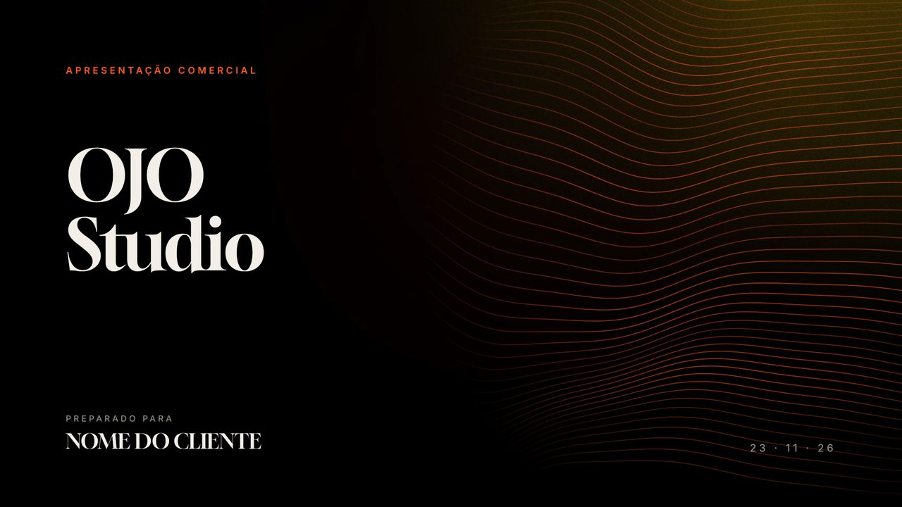

Arraste para reordenar · clique no olho para ocultar · Enter abre · Esc fecha
← → navegar · espaço avançar · G páginas · F tela cheia · L idioma · T transição · M motivo visual · H ajuda · 1–9 ir para página · Home/End
